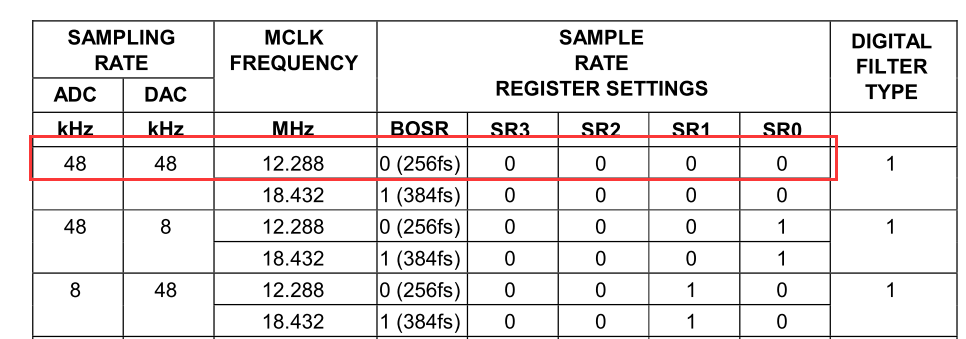

音频模块AN831的录音与播放#
实验Vivado工程为“audio_i2s_stream”。
由于开发板上没有音频部分的电路，需要外接一个芯驿电子（黑金）的AUDIO音频模块AN831。本实验在此模块基础上，从SD卡中读出wav格式音乐文件，并利用DMA实现音乐播放功能。
音频模块上有三个音频连接器,其中粉色的接口为麦克风输入;绿色的接口为耳机输出;蓝色的接口为音频输入,用于连接DVD等音频输出口。
模块说明#
这里简单介绍一下音频模块AN831用到的音频编/解码芯片WM8731。该芯片在本设计中主要完成声音信号在采集和回放过程中的A/D和D/A转换功能。该芯片的ADC和DAC的采样频率为8KHz到96KHz可调，可转换的数据长度为16-32位可调。WM8731的内部有11个寄存器。该芯片的初始化以及工作时的工作状态和功能都是通过以I2C总线方式对其内部的这11个寄存器进行相应的配置来实现的。本设计中WM8731工作于从模式，采样频率设为48KHZ,转换的数据位长度为16位。WM8731的数字音频接口有5根引脚，分别为：BCLK(数字音频位时钟)、DACDAT(DAC数字音频数据输入)、DACLRC(DAC采样左/右声道信号)、ADCDAT(ADC数字音频信号输出)、ADCLRC(ADC采样左/右声道信号)。在本设计中ZYNQ为主设备，WM8731为从设备。ADCDAT、DACDAT、ADCLRC和DACLRC与位时钟BCLK同步，在每个BCLK的下降沿进行一次数据传输。BCLK、DACDAT、DACLRC、ADCLRC为WM8731的输入信号。ADCDAT为WM8731的输出信号。
在本系统中WM8731的控制和数据通信将用到I2C和数字音频总线接口。通过I2C接口配置WM8731的寄存器，通过I2S总线接口来进行音频数据的通信。数字音频接口可提供4种模式：
Right justified
Left justified
I2S
DSP mode
Left justified模式
I2S模式
Right justified模式
DSP/PCM 模式（MODE A）

DSP/PCM 模式（MODE B）
本实验选择I2S模式。
硬件环境搭建#
整体框图如下，采用ADI公司提供的I2S IP核，连接麦克风和音频输出，并采用一个DMA处理stream流数据。

以”ps_hello”工程为基础。实验中，需要用到HP接口，高速访问DDR3，打开HP0口
使能I2C 0并选择EMIO，用于配置WM8731，打开GPIO EMIO，用于连接按键和LED灯
并将EMIO的宽度设置为3，其中两个灯用于录音与播放指示灯，一个用于按键控制录音与播放
配置FCLK_CLK1为12.288MHz，此为提供给I2S的主时钟，I2S模块可以根据此时钟分频出BCLK和LRCLK
打开中断，用于连接DMA的中断口
配置DMA如下，打开读与写端口，选择SG模式，由于音频数据是32位宽度，将stream data width设置为32
添加ADI的I2S IP，此ip在工程目录的repo文件夹中，如何添加到vivado，前面已经讲过，不再赘述，以下简称为I2S模块。
连接axi dma的M_AXIS_MM2S到i2s的s_axis，此为音频播放的数据流接口中，也就是DMA将DDR内存中的音频数据传递到I2S模块；将axi dma的S_AXIS_S2MM到i2s的m_axis，此为录音数据流接口，将采集的麦克风数据通过DMA传输到DDR内存中。
连接FCLK_CLK1到data_clk_i，频率为12.288MHz
添加concat模块，连接dma的两个中断到ZYNQ中断口
自动连接
继续自动连接
导出I2S接口
修改引脚名称
选中lrclk_o的引脚，ctrl+c，ctrl+v复制一个引脚
修改名称，并与之连接起来，此为dac左右声道的时钟
导出GPIO和I2C，并修改名称
最终连接结果如下
绑定引脚，并生成bitstream，之后导出硬件信息
Vitis程序开发#
SD卡播放音乐实验#
硬件搭建完成后，如何播放音乐呢？前面已经介绍过SD卡的读写，以及SG DMA的使用，我们可以通过读写SD卡中的音频文件到DDR，然后将音频数据通过DMA传送到音频模块播放。以下为程序的流程：
初始化I2C和I2S模块关闭I2S模块发送和接收通道初始化中断控制器初始化GPIO读取SD卡里的wav音频文件初始化DMA并打开MM2S中断启动SG DMA传输使能I2S模块发送通道
新建audio_play工程
在bsp设置中使能xilffs库
在I2S模块初始化函数中，audio_reg_init函数进行wm8731的寄存器配置，将其配置为slave mode，16bit，采样率为48KHz。并对I2S模块的时钟寄存器配置，也将其配置为48KHz，即LRCLK的频率。
如何正确的设置位时钟BCLK和左右声道时钟LRCLK呢？前面讲到FCLK_CLK1设置12.288MHz，也就是提供给I2S模块的主时钟，BCLK和LRCLK都是根据它分频而来。为了得到48KHz的采样频率，选择BOSR为256fs，也就是MCLK频率=256*LRCLK。
一个声道是32个BCLK，两个也就是64个BCLK，因此BCLK频率=64*LRCLK频率，那么可以得出MCLK频率=4*BCLK。根据这样的比例关系配置I2S模块。
在发送数据之前，要将I2S模块的TX和RX通道关闭，否则会导致DMA传输异常。
在SD卡读数据的函数中，判断是否是wav文件，并记录长度。
WAV文件作为多媒体中使用的声波文件格式之一，它是以RIFF格式为标准的。RIFF是英文Resource Interchange File Format的缩写，每个WAV文件的头四个字节便是“RIFF”，所以本实验根据前4个字节是否为“RIFF”判断该文件是否为WAV文件，紧接着4个字节表示文件的大小，这样我们就可以确定要读取的数据量。WAV文件头大小是88字节，在播放时要把前88个字节的文件头去掉。
Bd_start启动DMA之后，将I2S的TX通道打开，这时候就能向AN831模块传输音频数据流了

板上验证#
将SD卡格式化，按照FAT32格式
将1.wav拷贝到SD卡中，播放音乐曲目为张雨生的大海，插到开发板的SD卡槽
将AN831音频模块连接到开发板，插入耳机，麦克风
AX7020/AX7010硬件连接图（J11扩展口）
下载程序
等待片刻，LED灯会亮，并开始播放音乐，等音乐播放完毕LED熄灭。(AX7020/AX7010为PL LED1)。
录音与播放实验#
前面的实验讲的是播放音乐实验，只用到了DMA的MM2S通道，也就是向外设发送数据的通道。本实验把DMA的双通道都用上，实现录音与播放的功能。最终现象为按下按键开始录音，录音时长固定为10秒钟左右，之后，再按下按键，把录音播放出来。
实验程序流程如下：
初始化I2C和I2S模块关闭I2S模块发送和接收通道初始化中断控制器初始化GPIO读取SD卡里的wav音频文件初始化DMA并打开MM2S和S2MM中断等待按键，启动S2MM通道SG DMA传输并使能I2S模块接收通道，开始录音录音完毕，等待按键，启动MM2S通道SG DMA传输并使能I2S模块发送通道，开始播放可以循环录音与播放操作
新建audio_record工程
首先定义了RECORD的长度，大概为10秒钟
同样在传输之前，将I2S模块的TX和RX通道关闭，并将要接收的数据长度发给
与前面实验不同的是，加了按键初始化，以及中断

以及按键的中断服务函数
初始化DMA，打开S2MM和MM2S的中断，并创建TX和RX的BD chain
按键按下启动DMA传输，使能I2S模块相应通道
DMA传输结束，关闭相应I2S模块通道，清除BD状态。
板上验证#
此实验不需要再用SD卡，连接硬件如下，插入耳机，麦克风
AX7020/AX701硬件连接图（J11扩展口）
下载界面如下
按下按键，录音LED灯会亮，10秒钟后熄灭，再次按下按键，播放LED灯会亮，10秒钟熄灭（AX7020/AX7010按键为PL KEY1，录音LED灯为PL LED2，播放LED灯为PL LED1）